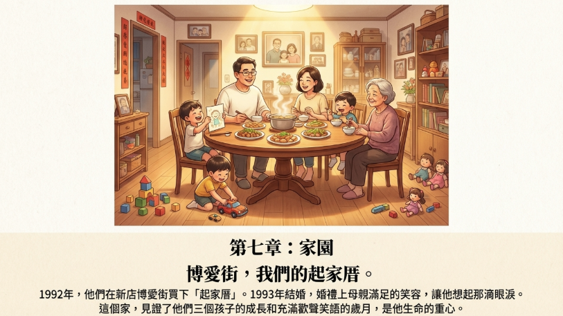
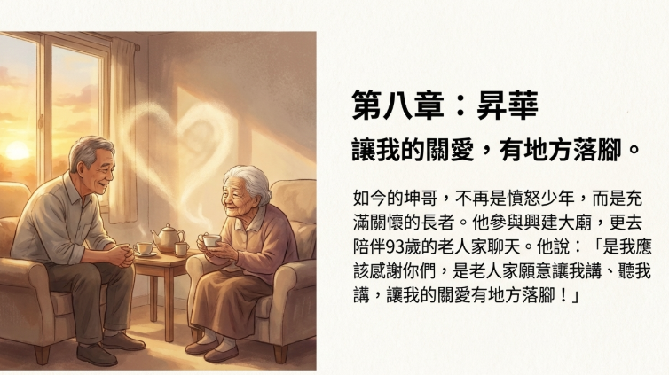
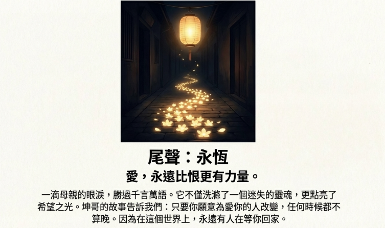

10故事仁愛里的仁愛人
1 首頁走進消失ing的警舍街角
0302社區走讀
2老照片 vs. 現在
3警舍周遭植物圖鑑
4故事仰望的日子
5延伸創作
6警舍地圖*壁報+發想
7Google My Map
8地景對比
9故事財哥
10故事仁愛里的仁愛人
11故事街訪坤哥
12故事警察的家後
13AI幫幫忙上課紀錄
14柯南教你用AI寫故事
15從Line對話到故事
1 首頁走進消失ing的警舍街角
0302社區走讀
2老照片 vs. 現在
3警舍周遭植物圖鑑
4故事仰望的日子
5延伸創作
6警舍地圖*壁報+發想
7Google My Map
8地景對比
9故事財哥
10故事仁愛里的仁愛人
11故事街訪坤哥
12故事警察的家後
13AI幫幫忙上課紀錄
14柯南教你用AI寫故事
15從Line對話到故事
1 首頁走進消失ing的警舍街角
0302社區走讀
2老照片 vs. 現在
3警舍周遭植物圖鑑
4故事仰望的日子
5延伸創作
6警舍地圖*壁報+發想
7Google My Map
8地景對比
9故事財哥
10故事仁愛里的仁愛人
11故事街訪坤哥
12故事警察的家後
13AI幫幫忙上課紀錄
14柯南教你用AI寫故事
15從Line對話到故事
愛的守護者------
王大哥的仁愛人生
在仁愛里這片土地上，有一個身影默默地書寫著最動人的愛的篇章。他叫王大哥，一個用生命詮釋「仁愛」二字的平凡英雄。
緣起：心中永遠的歸宿
王大哥與仁愛里的緣分，要追溯到童年時光,那時的他或許不會想到，這片土地會在他心中埋下一顆種子，在歲月的澆灌下長成參天大樹。
大學時，他選擇了土耳其文學，人生前半場經歷了許多職場轉換。但在退休那一年，他做出了一個讓所有人意想不到的決定------投身志工服務。那一刻，他的生命找到了真正的歸宿。
三十年的堅持：從慈濟到社區
其實，王大哥的志工路早在多年前就開始了。剛開始他加入慈濟，並接受志工培訓後，奉獻就成了他生命的主旋律。從環保護地球的行動，到對弱勢族群的細膩陪伴，他的愛心如涓涓細流，滋潤著每一個需要溫暖的角落。
清晨七點半的約定
在仁愛里，有一個感動所有人的畫面：自112年二月起，王大哥與仁愛里環保志工團隊建立了一個溫馨的共識------每個月的最末週日早上七點半，當整個城市還在沉睡時，他們已經手持掃把，穿梭在街頭巷尾進行社區清潔活動。一掃就是一個半小時。
王大哥不只是在清掃街道，更是在播撒愛的種子。他教導鄰居「清淨在源頭」的理念，耐心地分享回收知識，甚至告訴大家塑膠瓶可以製成衣服的環保奇蹟。他的熱忱不僅讓社區環境煥然一新，更像一盞明燈，溫暖著每一個人的心，讓原本冷漠的鄰里關係逐漸融化，變得溫暖互動。
十八年的黑暗中的光明
最令人動容的，是王大哥對視障朋友長達十八年的無私奉獻。有一天他從廣播中偶然得知台北彩虹心協會需要幫助，便毅然投入其中。這份服務考驗著他的耐心和細膩，因為他不只是他們的幫手，更是他們在黑暗中唯一的「眼睛」。
陪伴視障朋友練瑜珈，對王大哥來說是身心的雙重考驗。由於他們看不見老師的動作，他必須仔細地口述指導，甚至輕柔地協助調整手腳姿勢，確保每個動作都到位。他深知與盲人相處有許多「眉角」需要學習------帶他們外出時，絕不能隨便牽手，而要引導他們輕輕將手搭在自己肩膀上，詳細說明前方的階梯、轉彎，甚至步數，讓他們能安心穩步前行。
傾聽的藝術
王大哥強調，志工必須學會尊重和傾聽。不主動打探他們的隱私,更不隨意進入他們的家中，要給予他們充分的自主權，讓他們自己選擇是否分享。
他觀察到，許多視障者背後都有著令人心碎卻又堅韌的故事。女性視障者往往比較勇敢，較願意走出來面對生活；而男性有時會因為失去過去強者的形象而變得退縮，更依賴家人。當這些視障朋友願意向志工傾訴時，那是最真實、最動人的時刻。因為面對沒有負擔的志工，他們可以自由表達，釋放內心的鬱悶。
王大哥親眼見證許多視障朋友即使失明，仍以驚人的意志力面對生活，這深深感動了他，也更堅定了志工服務的意義。
終身學習：與時俱進的智慧
支撐王大哥能夠如此用心服務的背後，是他對終身學習的堅持與熱愛。自2000年起，王大哥便開始在國立空中大學進修，他選擇的課程五花八門，卻都與服務他人息息相關------老人護理、長期照護、殯葬生死學、營養學、能源與環境保育、生態保護，甚至跨足大數據分析、機器學習，乃至人工智慧等前沿領域。
這份學習的熱忱，不僅讓他與時俱進、緊跟時代脈動，更重要的是，每一門課程都化為他服務時的養分。照護獨居長輩時，他能運用護理知識給予更專業的關懷；面對環保議題時，他以科學的視角傳達理念；而新興科技的學習，更讓他明白世界正在如何改變，讓他能用更開闊的視野去理解不同世代的需求。
正是這份「服膺終身學習」的理念，讓王大哥在志工之路上越走越穩健，也讓他的服務更有深度和溫度。
歌聲中的溫暖
王大哥的愛不僅止於此，他還積極參與其他關懷活動。與坐輪椅的長輩一起歌唱，鼓勵他們開口，讓他們的生命重新充滿旋律與活力。每一個音符都承載著滿滿的愛意，在空氣中迴盪著溫暖。
未來的夢想：更多被遺忘的角落
展望未來，王大哥對仁愛里的期許充滿溫暖和深刻的智慧。他希望這份愛的力量能持續擴散，觸及更多被遺忘的社會角落。他深切希望能關懷更多獨居長輩，特別是那些缺乏資源、不願意或無法離開家門、默默承受孤獨的老人家。
他意識到這是社會日益嚴重的問題------許多人即使有送餐服務，但因心理或生理障礙，可能無法真正與外界互動。因此，王大哥誠懇地強調，志工服務不應只停留在表面，而要深入了解獨居長輩的真實需求，用「更柔軟的心」去傾聽和關懷。
他希望更多人投身這個領域的志工服務，不只陪伴他們，更要真正走進他們的家中，了解他們的輔具需求，透過慈濟委員等輔具平台提供協助，確保他們得到適切溫暖的幫助。
愛的傳承：拋磚引玉
王大哥深信，每個人都有貢獻的能力，即使微小的力量也能匯聚成巨大的暖流。他的故事是「仁愛」精神的最佳體現------用健康的身體把握每一個付出的機會，用充滿愛與智慧的心幫助更多人。
他希望自己的故事能像「拋磚引玉」一樣，感染和帶動更多朋友加入志工的行列，關懷社區和獨居長輩，讓愛與溫暖在仁愛里持續流轉，讓更多人看見志工的價值和意義。
對王大哥而言，志工服務不只是付出，更是學習，讓他擁有更柔軟的心，真正理解他人的需要。每一天都充滿意義和快樂，因為能用自己的能力幫助他人，是他最大的感恩和收穫。
他的願望是讓這份溫暖和關懷在仁愛里持續紮根，結出更多愛的果實，讓每一個需要的人都能感受到社會的溫暖。也許有一天，他們也能站起來，成為下一個「拋磚引玉」的仁愛人，讓愛的火炬永無止境地傳承下去。
在這個快節奏的時代裡，王大哥用他的一生告訴我們：真正的幸福,不在於擁有多少，而在於能給予多少。他的故事提醒著我們，每個人都可以成為別人生命中的光，只要我們願意伸出手，用心去愛。
訪談過後，我對王大哥的敬佩之情不只是油然而生，而是深深烙印在心中。從他口中聽到這麼多年來持續不懈的付出，我感受到那份堅毅與溫柔並存的力量。他幾乎全年無休，不論是投入環保工作，或是陪伴視障朋友，他都以耐心、細心與真誠，默默守護著這片土地上的人們。最令我動容的，是他不僅僅將志工當成一份工作，而是發自內心的使命。他希望透過自己的行動，感染更多人一起參與，讓愛與關懷在社區中持續傳遞。那份無私與無怨無悔，讓我深刻明白，原來真正的奉獻，就是不求掌聲、不計回報，卻依然堅持走下去。王大哥的身影，是仁愛里最令人敬仰的光。
在這次訪談中，最讓人感動的，是里長在百忙之中仍願意抽空全力協助。他不僅在訪談時用心聆聽，讓我們感受到被支持與重視，會後更以極大的耐心，一一解答我們對仁愛里的各項疑問，分享他的經驗與對社區的願景。從他的言談中，我們看到一位真正關心土地與里民的領導者，也因此獲益良多。仁愛里有這樣一位用心付出的好里長，真是里民共同的幸福與驕傲。
會後，大家開心地在滿滿活動回憶的照片牆前合影留念。圖中的女性，是阿梅姐，和王大哥一樣，都是仁愛里的資深志工。這群長年默默耕耘在地方土地上的長者們，願意無私奉獻自己寶貴的歲月與滿腔熱忱，只為讓仁愛里這片土地更加溫暖美好。看著他們慈祥而堅毅的身影，以及臉上洋溢的滿足笑容，真讓人心中湧起深深的感動與由衷的敬佩之情。
善意的漣漪：一位志工的故事.mp4
善意的漣漪：王大哥的故事
在台灣仁愛社區的晨曦中，有一個身影默默地穿梭在每條巷弄間。那是王大哥，一個用生命詮釋什麼叫做「善意漣漪」的平凡英雄。
當退休成為新的開始
你想想看，一般人退休之後會做什麼？大概就是放慢腳步，好好享受生活吧。但對王大哥來說，退休反而是另一個承諾的開始。
而且這個承諾有多重呢？整整七天！對，你沒聽錯，是整整一個禮拜七天都在為別人服務。
是什麼樣的動力在支持著這位長者呢？答案其實很樸實：
「我的身體還健康，所以我想用這個身體來幫助更多的人。」
聽起來很簡單的一句話，但這就是他所有行動背後最強大的信念。就是這麼一句話，讓一個人的退休生活變成了無數人生命中的光。
愛從最熟悉的地方開始
這一切從哪裡開始的呢？就從他最熟悉的地方——他家門口開始。
王大哥在仁愛社區已經住了超過五十年了。想像一下，這裡的每一條巷子，每一棵樹，對他來說都有滿滿的感情跟回憶。所以他做的事情都非常具體：
每天一大清早，當整個社區還在沉睡時，他就已經開始在社區裡巡邏，整理環境。不是因為有人要求他這樣做，而是因為他發自內心地愛著這個地方。
然後，他還會邀請街坊鄰居一起做資源回收，把環保變成大家共同的習慣。但更重要的是，他會花時間去跟老鄰居們聊聊天，串串門子。
這不只是在打掃環境而已，他是在用心經營一個有溫度的家。在這個越來越冷漠的時代，王大哥用他的行動溫暖著每一個人的心。
從收音機傳來的呼喚
但王大哥的關懷並沒有只停留在他的社區。
有一天，他從收音機聽到一個節目，就好像得到了一個更深的呼喚一樣。那一刻，他做了一個改變許多人命運的決定：他要成為盲人朋友的眼睛，帶著他們做瑜伽，幫助他們找到身體跟心靈的平衡。
這聽起來就很不簡單對吧？你來想想看，這真的是一個很有趣的挑戰。我們自己做瑜伽都要一直看著老師的動作，對不對？那如果學生根本看不到，你要怎麼教？你要怎麼去傳達那些很細微的姿勢跟感覺呢？
在黑暗中點亮希望的光
但愛總是能找到方法。
王大哥摸索出了一套獨特的方法，而且這套方法的核心完全是建立在信任跟尊重上面：
第一步，他會用嘴巴講清楚
每一個動作，每一個細節，他都會用最溫柔、最清楚的語言來描述。
第二步，在碰到對方之前一定會先問：「我可以碰你嗎？」
這簡單的五個字，卻包含著對每一個生命最深的敬重。在黑暗中，這句話就像是一道溫暖的光，讓人知道自己是被尊重的，是被愛護的。
第三步，才是輕輕的引導
甚至還會讓對方把手搭在他的肩膀上來找到方向跟平衡感。
這裡面最重要的就是讓對方覺得很安全，很被尊重，而不是被命令。
想想看，這份工作真的不只是幫忙調整一下手腳而已。這背後需要的是更深層的同理心，還有對人非常細膩的觀察。每一次的輕撫，每一次的引導，都承載著無盡的愛與耐心。
用心看見每個人的不同
做了這麼多年，王大哥到底從中領悟到哪些關於幫助人的智慧呢？
很有意思的是，他透過這樣的觀察，慢慢發現原來每個人在面對失明這件事情的時候反應是很不一樣的。
比方說，他注意到女性的學員通常比較願意走出來去尋找支持，很勇敢地去適應新生活；但是有些男性的學員可能會因為失去了傳統上那種強者的角色，心裡很失落，反而把自己孤立起來。
你看，能觀察到這些細微的差異，就知道他有多用心。每一個來到他面前的人，都不只是一個需要幫助的對象，而是一個完整的、有著豐富內心世界的生命。
最珍貴的界限與尊重
他還有一個非常非常重要的原則，就是尊重界限。
他從來不會去主動問學員說：「你是怎麼看不見的？」這種很私人的問題，絕對不會。他深深地明白，每個人心中都有不願被觸碰的傷痛，而真正的關愛不是好奇，而是陪伴。
他所做的就只是創造一個讓大家覺得很安心很舒服的環境。如果有一天對方準備好了，想說了，他就在那裡靜靜地聽。
這種智慧，這種對人性的深刻理解，不是從書本上學來的，而是從一顆真誠的心中自然流淌出來的。
志工路上的深刻領悟
這些經驗讓他深深感覺到：當一個志工，你自己的心態真的會決定服務的品質。
他學到了幾件事：
首先，耐心，耐心絕對是你最重要的工具。
在這個快速的時代，王大哥用他的行動告訴我們，真正的改變需要時間，而耐心就是愛的另一個名字。
還有，你的聲音，你的語氣會傳達所有的情緒。
所以你絕對不能把自己的壞心情帶給對方。對這些生活在黑暗中的朋友來說，王大哥的聲音就是他們的陽光。
而且最重要的，你的目標不是去同情他們，而是要賦予他們力量。
讓他們相信自己做得到。同情是居高臨下的憐憫，但賦予力量是平等的愛與支持。
一顆石子的無限可能
王大哥做的這一切其實匯總成一個很簡單、放諸四海皆準的道理，而且這個道理也像是在對我們每一個人發出邀請。
他從來不覺得自己是什麼了不起的英雄。他把自己看作是一個起點，就像是丟進水裡的第一顆小石頭。他希望他做的這些事可以激起一些漣漪，然後一圈一圈地影響更多人。
這就是為什麼這件事這麼重要——因為他把一個人的故事變成了一個對所有人的邀請。
他真正想要的不是只有他一個人在幫忙。他最終的目標是希望可以建立一個互相關懷的網絡。在這個網絡裡，去幫助別人這件事可以變成大家生活中一件很自然、很開心的事。
你心中等待發芽的種子
他的故事其實也像是在問我們每一個人一個問題：他提醒了我們，其實我們每一個人身上都有可以付出的東西，哪怕只是一個非常微小的善意，都有可能會掀起我們自己也想像不到的巨大漣漪。
也許你覺得自己很平凡，沒有什麼特別的能力。但王大哥告訴我們，愛不需要特別的技能，善意不需要豐富的資源。你只需要一顆願意付出的心，一雙願意幫助的手，一句溫暖的話語。
也許是在公車上為老人讓座，也許是對門衛大叔的一聲問候，也許是對同事的一個微笑，也許是對陌生人的一次幫助。這些看似微不足道的小事，也許就是你心中那顆等待發芽的善意種子。
永不停息的漣漪
王大哥用他的一生告訴我們：真正的快樂不在於擁有多少，而在於付出多少；真正的富有不在於得到什麼，而在於能夠給予什麼。
當我們每個人都願意成為那顆投入水中的小石子時，這個世界就會充滿無數圈溫暖的漣漪。而這些漣漪會相遇，會交織，會形成一片愛的海洋。
在這片海洋中，沒有人是孤獨的，沒有人是被遺忘的。每個人都是珍貴的，每個人都值得被愛。
那麼，你的漣漪會從哪裡開始呢？
在這個需要溫暖的世界裡，願我們都能記住王大哥那句樸實而深刻的話：「我的身體還健康，所以我想用這個身體來幫助更多的人。」願我們都能找到自己的「健康」，並用它來點亮別人的生命，也照亮自己的心靈。
Google Sites
Report abuse
Page details
Page updated
Google Sites
Report abuse
本篇珍貴影像與田野檔案
共 5 張紀錄照片

